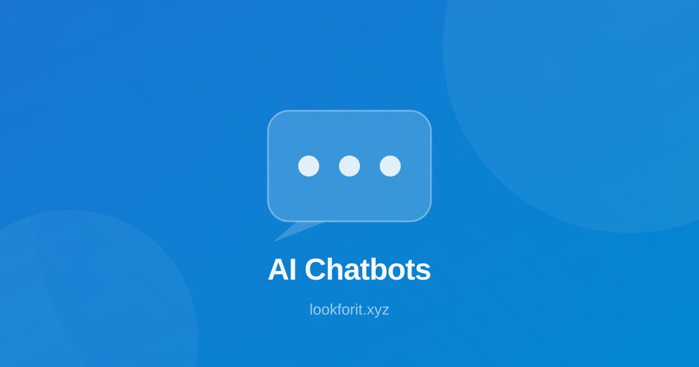

ChatGPT - AI assistant for writing and ideation.
AI Voice Agents for Small Business 2026: A Practical Guide
Software that answers the phone, books the appointment and qualifies the lead — and how to pick one without overpaying.
Published November 2026
AI voice agents have moved from demos to real phone lines. In 2026, a small business can have software answer the phone, understand the caller, check a calendar or an order, and then book, reschedule or transfer the call — without a receptionist on shift. The question is no longer whether the technology works. It is which platform fits your call volume, your budget and your tolerance for setup work.
This guide is built on the newest independent comparisons, published in November 2026. Retell AI ran more than 1,200 live test calls across eight platforms over six weeks, using the same inbound and outbound workflows on each. The AI Rankings compared platforms on pricing, latency, voice quality, developer control and compliance. The picture that emerges is consistent: voice agents are good enough for routine calls, still weaker than text AI on complex tasks, and very different from each other on price and control.
Below you will find what a voice agent actually is, what the evidence says, the platforms buyers compare, a pick-by-job guide, a seven-day test plan to run before any agent talks to your customers, and the compliance checks that matter. Where prices appear, they are the figures comparison sites checked against vendor pages in early November 2026. Always confirm the current price on the vendor page before you buy.

What an AI Voice Agent Actually Is
A voice agent is software that holds a spoken conversation on the phone or on the web. It connects telephony to speech recognition, a language model, text-to-speech and your business tools, so it can answer questions, take bookings, qualify a lead or pass the call to a human with a transcript attached. That is different from a voice generator, which only turns text into audio. Generators such as ElevenLabs, Murf AI and Speechify make narration and voiceovers. A voice agent listens, decides and acts. If you only need audio, start with our guide to the best AI voice generators for 2026 instead.
The stack has four parts. Speech-to-text hears the caller. A language model, or a speech-to-speech model, decides what to say next. Text-to-speech speaks the reply. Telephony and integrations connect the conversation to your calendar, booking system or CRM. The most flexible platforms let you swap each part. The simplest ones bundle everything and charge per minute, which is easier to start but harder to tune later.
The jobs that work best today are the routine ones: after-hours receptionist, appointment booking and rescheduling, lead qualification, order status, FAQ deflection, outbound reminders and follow-up calls. Complex selling, complaints and anything that needs judgement still belong with a person. A good rule is to automate the call you can script on one page, and keep a human one tap away for everything else.
What the November 2026 Evidence Says
Retell AI tested eight platforms through more than 1,200 live calls over six weeks. Every platform ran the same workflows: an after-hours receptionist flow, a four-question lead qualification script, an appointment reschedule in the middle of a call, and an outbound follow-up campaign. Latency was measured on every call, and the true per-minute cost was calculated after the full stack, not from the headline rate. That kind of testing matters, because headline prices hide telephony, model and voice costs.
The market is growing fast. Retell's guide puts the AI voice agent market at $2.54 billion in 2025, on track for $3.51 billion in 2026, with the number of platforms claiming to be production-ready growing nearly as fast. That growth is also a warning: many new platforms are untested on real call volume, so independent evidence matters more than a polished demo.
The honest caveat comes from the tau-Voice benchmark, published on 14 March 2026. Across 278 customer-service tasks, voice agents completed 31 to 51 percent of tasks, against 85 percent for the same AI working in text. Voice is harder than text: interruptions, accents, background noise and half-finished sentences all cost accuracy. The gap is closing, but it is the reason to test on your real calls instead of trusting a demo.
There are bright spots. ElevenLabs Agents scored a 90.5 percent task success rate in the independent Artificial Analysis Speech Agent Arena, the highest of any off-the-shelf cascaded agent platform tested, according to The AI Rankings. Retell AI holds a 4.8 out of 5 rating from 2,638 reviews on G2, the largest body of independent user ratings in the category. Use those numbers as a shortlist, not a verdict: your callers, your scripts and your integrations will decide the result.

The Platforms Buyers Compare
Retell AI — best overall for production phone agents. The AI Rankings picks Retell for most businesses, and Retell's own testing ranks it first across inbound and outbound work. It offers a visual flow editor for non-developers plus full API access, and publishes itemised per-minute pricing of about $0.07 to $0.31 a minute before telephony, with $10 of free credits to start. Choose it when you want a managed inbound phone agent live within weeks.
Vapi — best for engineering teams that want full control. Vapi is a developer-first platform: you assemble the speech, model and telephony layers yourself and pay a $0.05 a minute platform fee, with model and telephony costs passed through at cost. Both independent expert reviews found it the most flexible platform in the category. It includes $5 of free credit. Choose it when engineers must own the stack and you will maintain the integrations yourself.
ElevenLabs Agents — best when voice quality is the product. ElevenLabs is best known for voice synthesis, and its agents product uses those voices. It starts with a free 15-minute tier, with Pro at $99 a month for 1,238 minutes and overage at $0.08 a minute. If the voice itself is the brand experience — a clinic, a studio, a premium service — this is the natural pick. You can also explore the voice generation side on our ElevenLabs tool page.
Bland AI — best for high-volume outbound campaigns. Bland is built for outbound at scale, with deterministic Pathways that branch the conversation by rules you set. Pricing checked in September 2026 lists $0.14 a minute on Start and $0.12 a minute on Build plus a $299 a month platform fee. Choose it when the job is thousands of similar outbound calls with predictable branching.
Synthflow — best no-code builder for agencies. Synthflow suits agencies that deploy client agents fast, with a visual builder and no engineering team required. Pricing is enterprise-scoped, so ask for a quote rather than budgeting from a public page.
Goodcall — best for a solo business on one line. Goodcall is the simple option for a solopreneur or a single-line small business, at $79 a month. It trades flexibility for a setup you can finish in an afternoon.
Two of these platforms are already listed on Lookforit: ElevenLabs for voice, and voice-generation tools such as Murf AI, Speechify and Descript for the audio side of the job. Retell, Vapi, Bland and Synthflow are not yet in the directory — if you use one, you can suggest it through our listing requests page.
Pick by the Job
Inbound receptionist or booking live this month: Retell. Managed, pay-as-you-go minutes, visual builder, and the strongest independent review base.
Custom multi-provider voice pipeline, engineers own it: Vapi. Swap the language model, speech recognition, voice and telephony provider, and accept the integration work that comes with it.
Voice realism is the product: ElevenLabs Agents. The most natural-sounding voices in the category, with a free tier to test on.
High-volume outbound with branching scripts: Bland. Deterministic pathways and bundled per-minute pricing that is easy to forecast.
No engineering capacity, agency deployments: Synthflow. A no-code builder that lets you ship client agents without a developer.
Solo business, one phone line: Goodcall. The cheapest managed route to an agent that answers when you cannot.
If you are unsure, start from the call, not the platform. Write down the five calls you miss most often, then pick the platform whose trial handles those five calls best. For support-heavy teams, pair this with our guide to the best AI tools for customer support, and for the wider stack, the best AI tools for small business.
A Seven-Day Test Before It Talks to Customers
Days 1 to 2: collect real calls. Pull ten real calls from your logs or your memory: the booking, the reschedule, the price question, the wrong number, the angry caller, the caller who interrupts. Write the ideal outcome for each one.
Day 3: run them on the free tier. Use the free minutes or credits. Do not judge the demo voice; judge whether the booking lands on the right day and the transfer reaches the right person.
Day 4: check the failure modes. Test accents, background noise, a caller who talks over the agent, and a caller who changes their mind mid-sentence. Note where the agent loses context.
Day 5: test the integrations. Confirm the calendar, booking system or CRM actually updates. A booking the agent claims but never writes down is worse than a missed call.
Day 6: run it after hours. Let it take real evening calls with a human on standby. Read every transcript the next morning.
Day 7: decide on one metric. Pick booking success rate or first-call resolution, set a threshold, and only keep the agent if it clears it. If it does not, change the script once and retest — do not keep adding tools.
Compliance and Disclosure
Three checks come before any launch. First, tell callers they are speaking with AI. Disclosure is required in many places, and it sets the right expectation: callers are more patient with an agent they know is software. Second, check recording and consent rules where your callers live, and make sure your platform stores recordings and transcripts in a region you are comfortable with. Third, budget for outbound compliance: A2P and 10DLC registration for text messages, and a human warm-transfer path so a caller can always reach a person. No platform fixes a compliance gap on its own. For the wider picture on agents that take actions, read our guide to AI agents explained.
Rich Media: Watch and Adapt
Use this embed slot for topical explainers, walkthroughs, or expert clips. Rich media can improve comprehension and session depth when used to clarify frameworks rather than distract from the article's purpose.
When adding video, keep these rules simple: summarize key points above the embed, add a text-based action checklist below it, and connect viewers to your next internal step. For example, point readers to customer support tool selection, small business workflows, or voice generation based on intent stage.
FAQ
1) How much does an AI voice agent cost for a small business?
Most platforms charge per minute, roughly $0.05 to $0.31 a minute plus telephony, based on pricing checked in early November 2026. Managed plans for a single line start at about $79 a month. Estimate a busy month, not a quiet one, and confirm the current price on the vendor page before you buy.
2) Can an AI voice agent book appointments during the call?
Yes, when it is connected to your calendar or booking system. It can check availability, book, reschedule and confirm by text. Verify this on your real calendar during the trial, not on a demo calendar.
3) Is an AI voice agent the same as an AI voice generator?
No. A voice generator turns text into audio for narration or voiceovers. A voice agent holds a live spoken conversation, understands the caller, and takes actions such as booking or transferring the call.
4) Do callers need to be told they are talking to AI?
Yes, you should tell them. Disclosure is required in many places, and it builds trust. A short line at the start of the call, such as "You are speaking with our AI assistant", is enough.
5) What is the biggest risk with an AI voice agent?
Task completion is lower than with text AI. The tau-Voice benchmark of 278 customer-service tasks found voice agents completing 31 to 51 percent of tasks, against 85 percent for the same AI in text. Test the agent on your real calls and keep a human handoff path.
Related Articles
- Best AI Voice Generators for Creators in 2026
- Best AI Tools for Customer Support in 2026
- Best AI Tools for Small Business in 2026
- AI Agents Explained: What They Do in 2026
Final Takeaway
AI voice agents are ready for the routine calls a small business misses: the after-hours booking, the reschedule, the simple question. They are not ready to replace judgement, and the cheapest headline price is rarely the cheapest real cost. Shortlist Retell for managed inbound work, Vapi if engineers own the stack, ElevenLabs when the voice is the brand, and Bland for high-volume outbound. Then run the seven-day test on your real calls, read every transcript, and keep a human one tap away. That is how a voice agent earns its minutes.